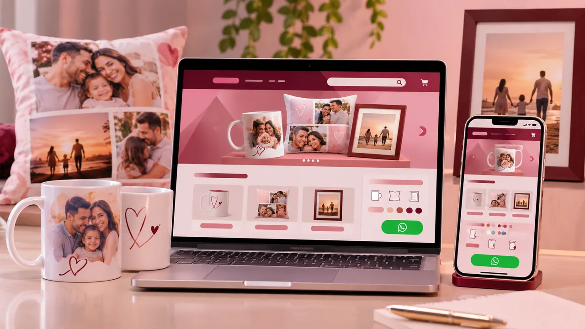
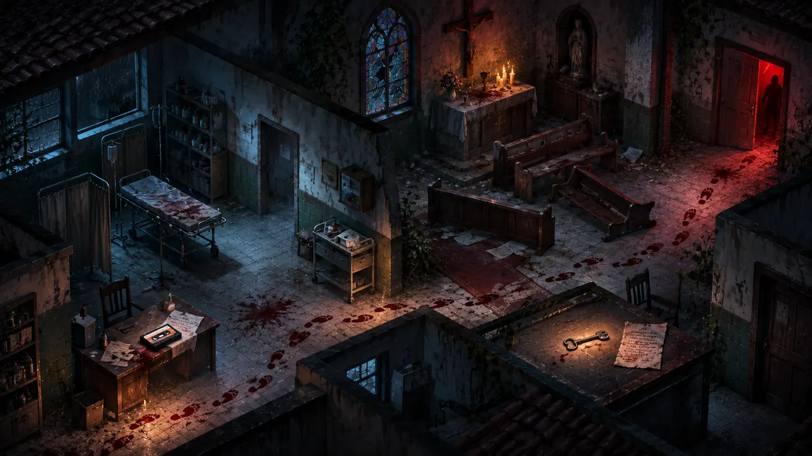
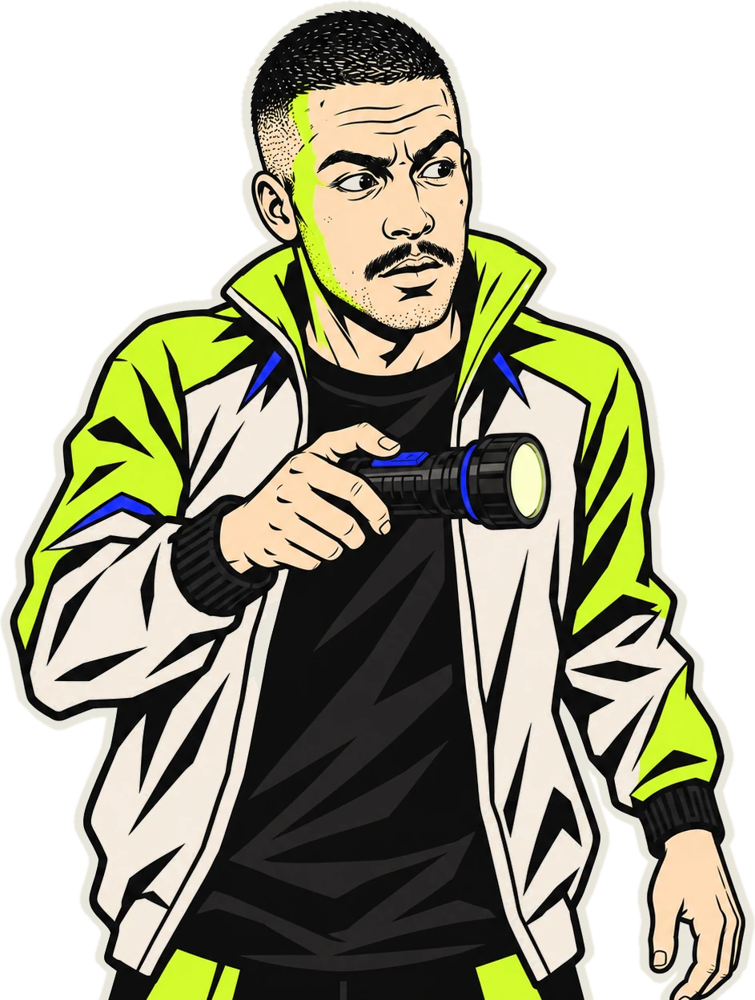
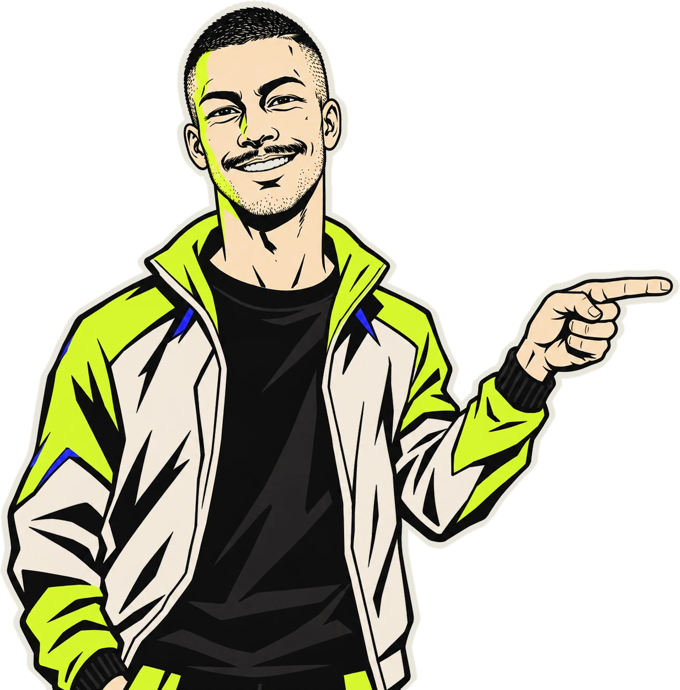

Concluído e em uso
Dara Sublimação
Vitrine digital de produtos personalizados, com catálogo, opções de personalização e encaminhamento do pedido pelo WhatsApp.
Conhecer a vitrinePortfólio 2026
como ele
fez isso?
Gostou deste site?
O seu pode ser assim.
Crio portfólios, sites de venda e vitrines digitais com visual próprio, pensados para a imagem que você quer passar na internet.
Minha experiência com criação digital

Concluído e em uso
Vitrine digital de produtos personalizados, com catálogo, opções de personalização e encaminhamento do pedido pelo WhatsApp.
Conhecer a vitrineAtividade de curso
Projeto de curso criado para apresentar nossa turma de desenvolvimento web e sua trajetória.
Conhecer o projetoConcluído
Guia para quem está começando a usar inteligência artificial, com orientações e exemplos para escrever instruções mais claras.
Ler o guia
Jogo em desenvolvimento
Um jogo de terror e sobrevivência com visão isométrica. Uma versão de teste já pode ser jogada no navegador.
Abre em uma nova aba.
Luz apagada. Clique para ligar a lanterna.

Seu negócio precisa de um espaço para apresentar o que oferece e facilitar o contato com os clientes. Podemos conversar sobre o tipo de site que faz sentido para você.
Para mostrar seu trabalho, seus projetos e como falar com você.
Focados em um produto ou serviço, com um caminho direto para o cliente fechar pelo WhatsApp.
Seus produtos e opções organizados em um catálogo, com o atendimento pelo WhatsApp.
Cada projeto começa com um objetivo: o que precisa ser apresentado, para quem e como a pessoa vai usar o site. A partir disso, organizo as ideias e as referências para orientar a criação.
No desenvolvimento, uso ferramentas atuais, entre elas a inteligência artificial, para ganhar agilidade. Eu defino a estrutura, o visual e os textos, testo cada funcionalidade e ajusto o que for preciso antes da entrega.
Sou Vitor Higino, técnico em informática e estudante de desenvolvimento de páginas web. Tenho interesse em interfaces, jogos e experiências interativas. Desenvolvo sites e projetos interativos, do planejamento aos testes.
Tecnologias: HTML, CSS e JavaScript
Ferramentas de apoio: Claude Code, Codex e Antigravity

Quer um site para seu negócio ou tem um projeto em mente? Me conte o que você precisa para conversarmos sobre as possibilidades.